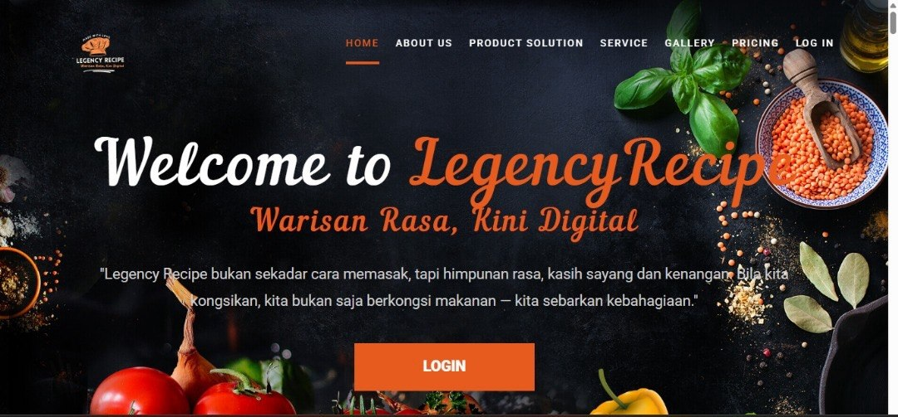
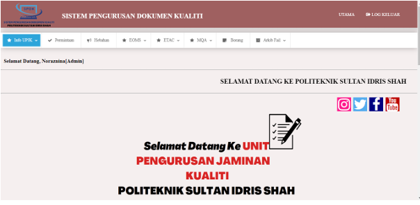
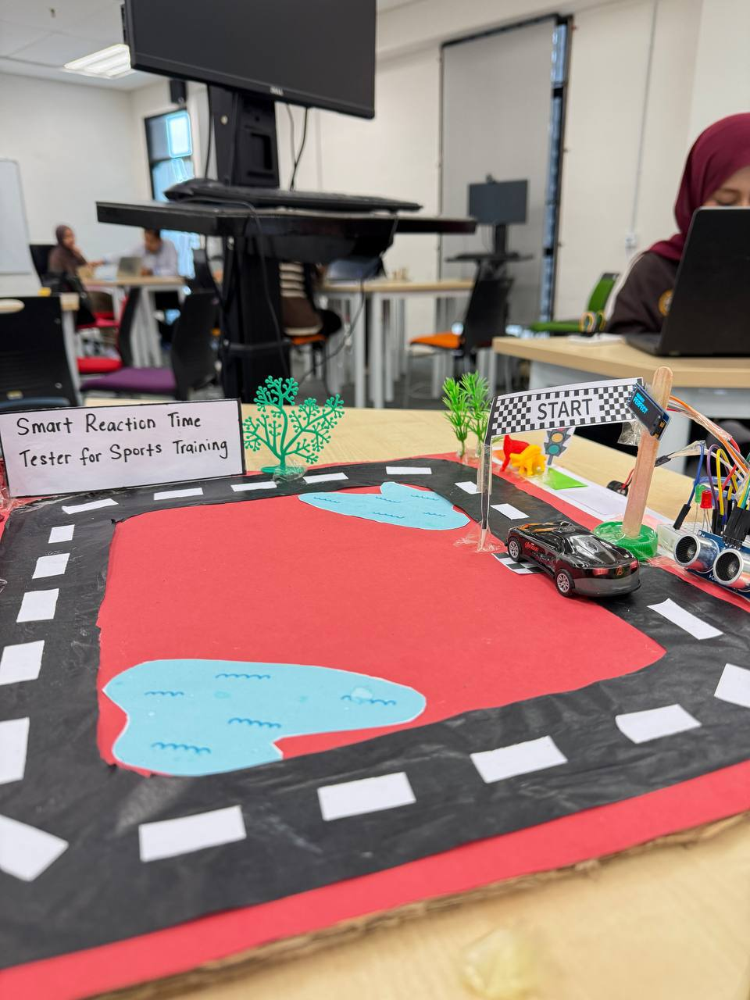
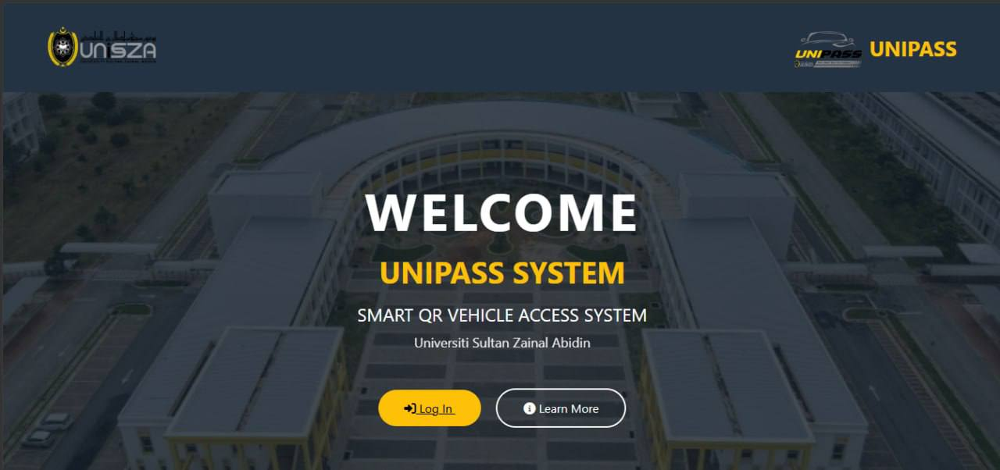

Featured Projects

Legacy Recipe System
A digital recipe management system designed to preserve traditional recipes in an organized and accessible platform. The system helps users store, manage, and explore recipe information more efficiently.

Quality Document Management System
A structured system for managing quality-related documents. It supports document storage, tracking, organization, and better accessibility for users who need reliable document control.

Smart Reaction Time Tester for Sport Training
A smart training tool that measures and improves athlete reaction time. This project focuses on interactive testing, response speed, and sports training performance improvement.

UNIPASS Smart QR Vehicle Access System
A smart QR-based vehicle access system for university vehicle management. It supports vehicle registration, QR sticker generation, and security verification for campus access control.

UniSZA Bus Tracking System
A transportation support system that helps students access bus-related information and improve travel convenience around campus through a more user-friendly tracking experience.

Personal Blog Portfolio
This portfolio website showcases my background, resume information, technical skills, and project experience. It was developed using HTML, CSS, JavaScript, Git, and GitHub Pages.